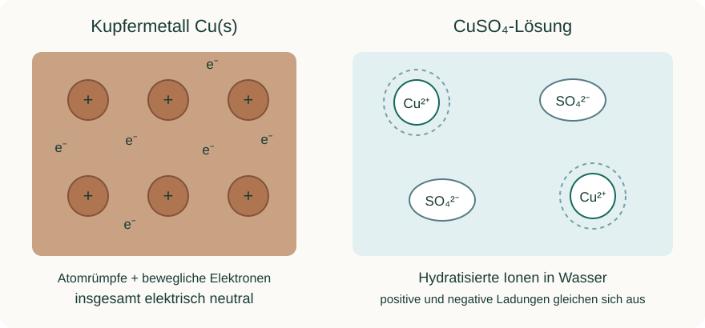

Informieren
Erklärung und Beispiel öffnen
Cu(s) bezeichnet elementares Kupfer im festen Metall. Cu²⁺(aq) bezeichnet gelöste, hydratisierte Kupfer(II)-Ionen. Beide enthalten dasselbe Element, unterscheiden sich aber in Ladung und chemischem Verhalten. Ein Metall ist kein Vorrat frei beweglicher Metallionen in Wasser; im Metall ermöglicht die metallische Bindung bewegliche Elektronen.

Die oxidierte und reduzierte Form bilden zusammen ein Redoxpaar, etwa Cu²⁺/Cu. Bei einer Reaktion von Zink mit Kupfer(II)-Ionen sind jedoch zwei Redoxpaare beteiligt: Zn²⁺/Zn und Cu²⁺/Cu. Zink gibt Elektronen ab und ist der Elektronendonator bzw. das Reduktionsmittel. Cu²⁺ nimmt Elektronen auf und ist der Elektronenakzeptor bzw. das Oxidationsmittel.
Zn(s) + Cu²⁺(aq) → Zn²⁺(aq) + Cu(s)
Ein Reduktionsmittel reduziert den Partner und wird dabei selbst oxidiert. Ein Oxidationsmittel oxidiert den Partner und wird selbst reduziert. Sulfat- oder Nitrationen dienen in diesen Beispielen als Gegenionen; ihre Ladung ist für die Lösung wichtig, auch wenn sie in der gekürzten Redoxgleichung nicht erscheinen.
Die Rolle hängt vom Reaktionspartner ab: Kupfer kann gegenüber Ag⁺ als Elektronendonator auftreten; gegenüber Zn liegt in der reagierenden Ausgangskombination dagegen Cu²⁺ als Akzeptor vor. „Kupfer ist immer der Akzeptor“ ist deshalb keine brauchbare Regel.
A · Teilchen und Rollen zuordnen
Für die ersten beiden Kombinationen ist eine Metallabscheidung nachgewiesen. Für die dritte ergibt sich unter den angegebenen üblichen wässrigen Bedingungen keine spontane Zinkabscheidung. Ergänze jeweils: beteiligte Redoxpaare, tatsächlich reagierender Donator und Akzeptor sowie entstehende Teilchen.
- Zn(s) wird in eine Cu²⁺-haltige Lösung gegeben.
- Cu(s) wird in eine Ag⁺-haltige Lösung gegeben.
- Ag(s) wird in eine Zn²⁺-haltige Lösung gegeben. Erkläre hier, weshalb du keine tatsächlich ablaufende Elektronenübertragung zuordnest.
Hilfe 1
Schreibe für jedes Element Metall und zugehöriges Ion als Paar. Frage dann: Wer könnte Elektronen abgeben, wer aufnehmen – und ist die Reaktionsrichtung tatsächlich gegeben?
Hilfe 2
In Kombination 2 ist Cu der Donator und Ag⁺ der Akzeptor. In Kombination 3 wären Ag und Zn²⁺ nur die hypothetischen Partner der nicht spontan ablaufenden Verdrängung.
Musterlösung
| Kombination | Redoxpaare | Reaktionsrollen und Produkte |
|---|---|---|
| 1 | Zn²⁺/Zn; Cu²⁺/Cu | Zn: Donator/Reduktionsmittel → Zn²⁺; Cu²⁺: Akzeptor/Oxidationsmittel → Cu. |
| 2 | Cu²⁺/Cu; Ag⁺/Ag | Cu: Donator/Reduktionsmittel → Cu²⁺; Ag⁺: Akzeptor/Oxidationsmittel → Ag. |
| 3 | Ag⁺/Ag; Zn²⁺/Zn | Die gedachte Übertragung von Ag auf Zn²⁺ ist unter diesen Bedingungen nicht spontan. Daher keine tatsächlich reagierenden Donator-/Akzeptorrollen für diese Verdrängung. |
Bei 1 und 2 sinkt die positive Ladung des Akzeptors durch Elektronenaufnahme; das Metall des Donators geht als Kation in Lösung. Beim dritten Ansatz darf die bloße Anwesenheit von Metall und Ionen nicht mit einem Nachweis der Reaktion verwechselt werden.
B · Ein Teilchenmodell berichtigen
Ein Lernpartner erklärt: „In Kupfersulfat-Lösung schwimmen Kupferatome und Sulfat. Wenn Zink dazukommt, nimmt Zink Elektronen auf und wird deshalb zum Reduktionsmittel. Sulfat muss ebenfalls reduziert werden, sonst bleibt Ladung übrig.“
- Korrigiere die drei fachlichen Fehler in einer zusammenhängenden Erklärung.
- Skizziere den Stoffübergang, wenn genau zwei Zn-Atome und zwei Cu²⁺-Ionen umgesetzt werden. Gib an, wie viele Elektronen übertragen werden. Wasser und Gegenionen kannst du als unveränderte Umgebung kennzeichnen.
Hilfe 1
Prüfe zunächst die Teilchensorte in der Lösung, anschließend die Definition von Reduktionsmittel. Unterscheide Ladungserhaltung von einer Reaktion der Gegenionen.
Hilfe 2
Jedes Zn-Atom liefert zwei Elektronen. Jedes Cu²⁺-Ion benötigt zwei. Sulfat bleibt in der gekürzten Reaktionsbilanz unverändert; nach der Reaktion gleichen Zn²⁺-Ionen seine Ladung aus.
Musterlösung
In der Lösung befinden sich hydratisierte Cu²⁺-Ionen und SO₄²⁻-Ionen, keine frei schwimmenden Kupferatome als gelöster Ausgangsstoff. Zink gibt Elektronen ab und wird zu Zn²⁺ oxidiert. Deshalb ist es das Reduktionsmittel. Cu²⁺ nimmt Elektronen auf und wird zu Cu reduziert. Sulfat wird bei dieser Reaktion nicht reduziert.
2 Zn → 2 Zn²⁺ + 4 e⁻
2 Cu²⁺ + 4 e⁻ → 2 Cu
Die Zeichnung zeigt zwei Zn-Atome, die ihren Metallverband als Zn²⁺ verlassen, und zwei Cu²⁺-Ionen, die als Kupferatome in den Belag übergehen. Insgesamt werden vier Elektronen übertragen. Vorher tragen zwei Cu²⁺, nachher zwei Zn²⁺ dieselbe Gesamtladung +4; die unveränderten Gegenionen können den Ladungsausgleich weiterhin leisten.
Zurück zur Checkliste
Kannst du den Punkt jetzt an einer eigenen Erklärung oder einer neuen Aufgabe nachweisen? Ordne dich ein: sicher (selbstständig), teils (mit Hilfe) oder offen (noch Lernbedarf). Notiere bei Bedarf, was du noch klären möchtest.
Fachliche Quellen und Modellgrenzen
Eigene Lerntexte, Aufgaben, modellhafte Daten und Abbildungen. Fachliche Grundlagen:
- OpenStax, Chemistry 2e: Galvanic Cells
- OpenStax, Chemistry 2e: Review of Redox Chemistry
- OpenStax, Chemistry 2e: Electrode and Cell Potentials
Die Beispiele verwenden vereinfachte Metall/Metallionen-Systeme. Reale Beobachtungen hängen auch von Konzentration, Oberfläche, Zeit und Nebenreaktionen ab.